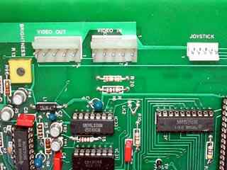
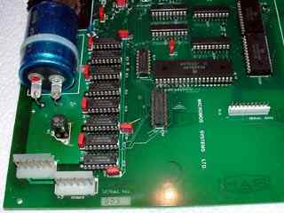

Micromos 6809 connectors by Lee Davison [Back]
Here are detail pictures of the connectors on the Micromos 6809 board. (Click on them for a larger, 800 x 600, version.)
 
![[Return to top]](../../epc.png)
![[e-mail]](../../eml_sm.png)